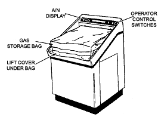
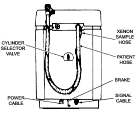

Operating Documentation
Direction 5112972-800, Rev# 2
CT Planned Maintenance Procedures
Operating Documentation |
| Required Persons | Preliminary Reqs | Procedure | Finalization |
|---|---|---|---|
| 1 | Timing Not Applicable | 5 mins | Timing Not Applicable |
Procedure Effectivity:
| Assembly: | XENON BLOOD FLOW |
| Subassembly: | |
| Purpose: | Check Condition of Hoses/Bag |
| Last Revised: | July 1995 |
| Item | Qty | Effectivity | Part# | Manufacturer | |
|---|---|---|---|---|---|
| Patient Hose | 1 (if required) | - | 46-237928G1 | - | |
| Xenon Samole Hose | 1 (if required) | - | 46-241605p3 | - | |
| Bag | 1 (if required) | - | 46-237494P1 | - | |
Inspect Xenon fill bag (see Illustration 1). It should not be damaged. Check the seams, check for holes, etc.
Illustration 1: Bag Inspection

Inspect patient hoses (see Illustration 2). They should be free of damage.
Illustration 2: Hose Inspection

Open top of unit under Xenon fill bag. Inspect all hoses or loose clamps that could cause a leak.
No finalization required.